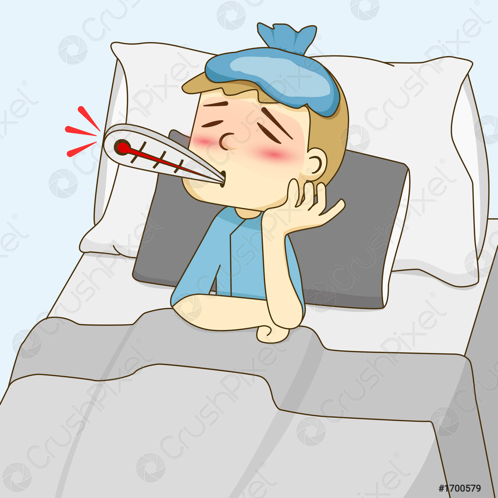
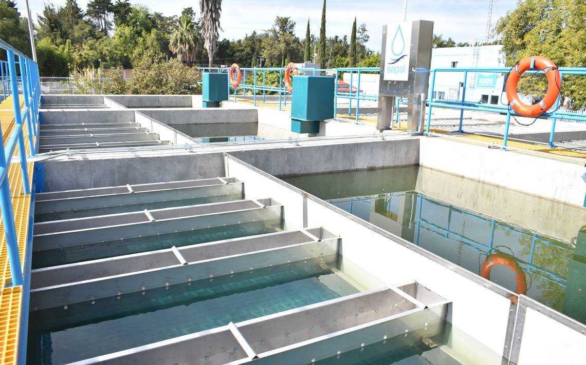

|
|
Fuentes de Contaminación | El agua puede ser contaminada por diversas fuentes, incluyendo la descarga de desechos industriales, agrícolas y domésticos sin tratar en cuerpos de agua. |
|  | Impacto en la Salud Humana y Ecosistemas | La contaminación del agua tiene impactos negativos significativos en la salud humana y los ecosistemas acuáticos. El agua contaminada puede contener patógenos que causan enfermedades como cólera, hepatitis y otras infecciones gastrointestinales. |
|  | Necesidad de Tratamiento y Regulación | Para abordar la contaminación del agua, es esencial implementar prácticas de gestión adecuadas, como el tratamiento de aguas residuales antes de su liberación en cuerpos de agua. |